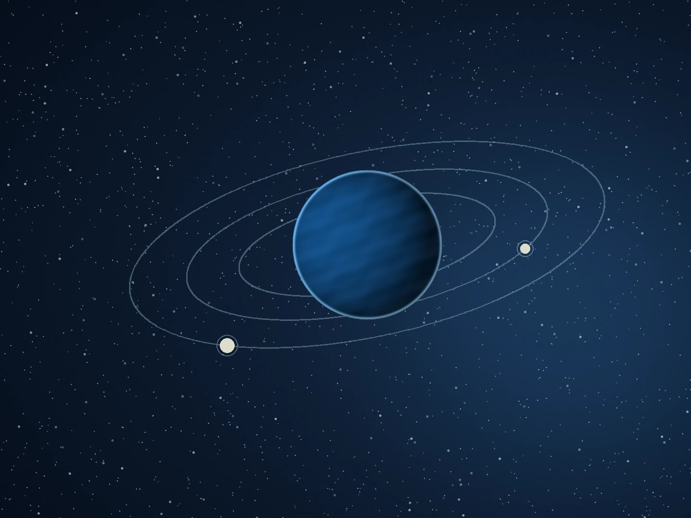

The origin and dynamics of satellites

01 / Giant-impact disks
Accretion in Giant-Impact Generated Disks
- Investigation of accretion regimes (continuous, discrete, pyramidal).
- Early dynamical evolution and migration of natural satellites.
- Applications to the Earth–Moon system, Pluto–Charon, binary asteroids, and other terrestrial bodies.
Accretion regimes
Satellite migration
Giant-impact disks

02 / Ring–satellite interactions
Dynamical Interaction Between Rings and Satellites
- Satellite migration driven by disk torques.
- Gap opening and resonant interactions in particulate disks.
- Applications to rings around planets and minor bodies.
Disk torques
Gap opening
Resonances

03 / Exomoons
Formation and Detection of Exomoons
- Investigation of post-impact disk conditions and subsequent disk evolution in exoplanetary systems.
- Use of transit timing variations (TTV) and transit duration variations (TDV) for indirect detection.
- Identification of exomoon signals in both synthetic and observational light curves.
Post-impact disks
TTV & TDV
Light-curve analysis